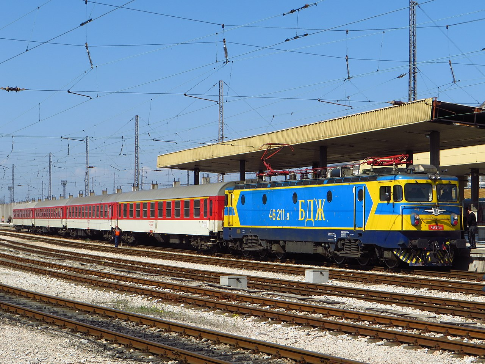
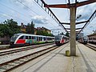

Холдинг „Български държавни железници“ поддържа и експлоатира следните бързи влакове със задължителна резервация: БВЗР „Златни пясъци“ 2601/2602 София – Варна – София през Горна Оряховица; БВЗР „Чайка“ 3601/3602 София – Бургас – София през Карлово; БВЗР „Слънчев Бряг“ 8601/8602 София – Бургас – София през Пловдив; БВЗР „Син Дунав“ 4611/4612 Русе – София – Русе. През 2017 г. (от 1 юли 2017 г.) за първи път в историята на БДЖ и благодарение на основно ремонтираните с европейски средства 1-ва и 8-а ЖП линии, стана възможно пускането на редовен БВЗР с максимална скорост от 150 km/h. Това е БВЗР „Слънчев Бряг“, който за целта се обслужва от модернизирани в Končar Ellok – Zagreb електрически локомотиви серия 46 200 и с вагони серии 21 – 50 (второкласен купеен), 10 – 50 (първокласен купеен) и 84 – 97 (вагон – бистро) (Виж „Фотогалерия“).

Влак,,Слънчев Бряг"

електрически влакове